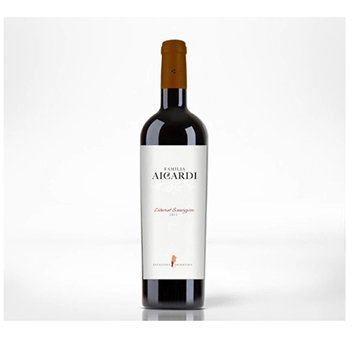
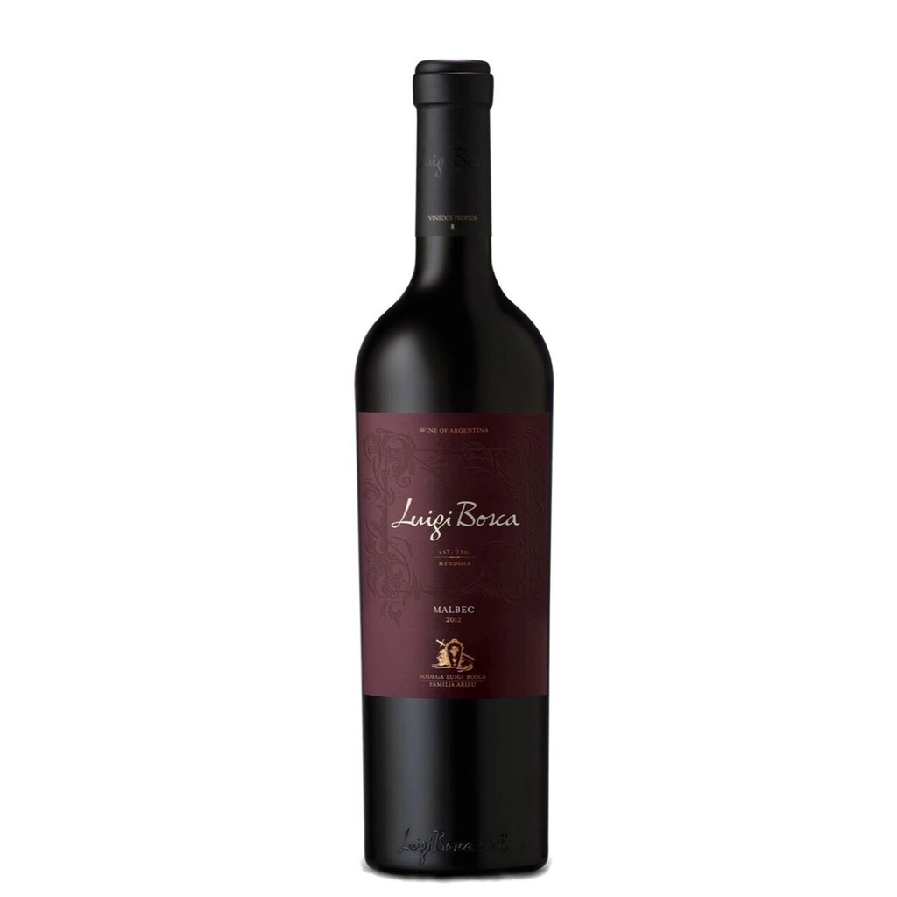

Quienes Somos
Una vinoteca es mucho más que un negocio de venta de vinos y demás bebidas. Las vinerías boutique, con idéntico perfil a las grandes vinotecas y concepto pero con puntos de venta más reducidos en espacio y menor recambio de stock o volumen de venta, constituyen un bloque casi virgen por franquiciar, atractivo para el mediano inversor que busca emprender en algo manejable de forma individual y trato directo con el cliente. En Vineria Priotto nos encargamos de brindarles una experiencia unica en el mercado.